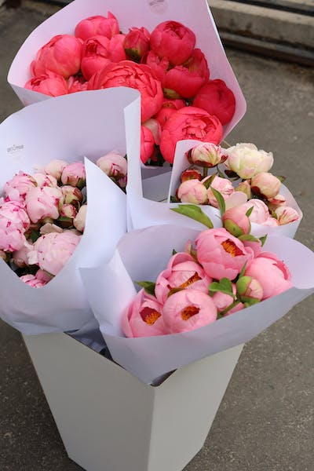
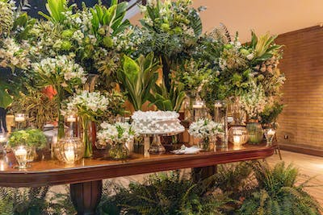
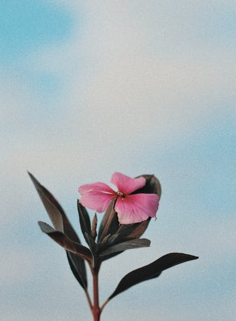
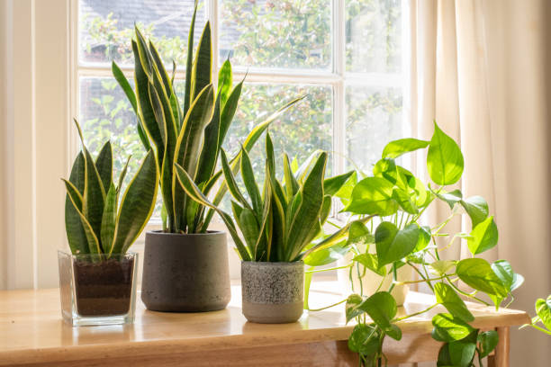
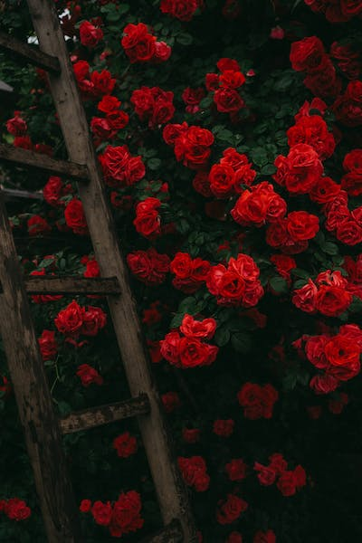
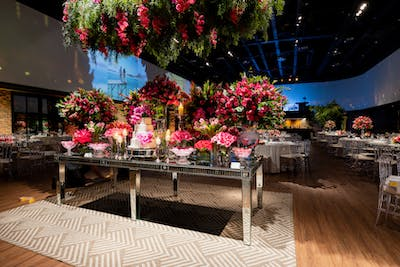
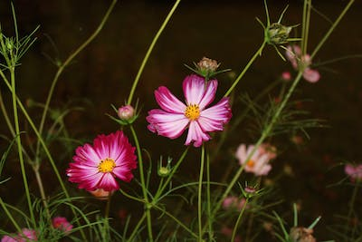

| Ramos de Flores |  Aquí nuestra seleccion de bouquets de 25-200€ |
|---|---|
| Arreglos Florales |  Aqui nuestros arreglos con un ejemplo visual (P 20-50€, M 50-100€, G 100-500€) |
| Flores por Suscripción |  Nuestra selección de flores desde 30€ |
| Plantas de Interior |  Nuestra variedad de plantas de interior 50€ |
| Rosas Eternas |  Nuestras rosas eternas 60€ |
| Arreglos Funerarios |  Arreglos funerarios con un ejemplo visual (P 20-50€, M 50-100€, G 100-500€) |
| Flores de Temporada |  Nuestra selección de flores de temporada (pueden variar) 100€ |
Aquí un video para que se vea como hacemos nuestros arreglos